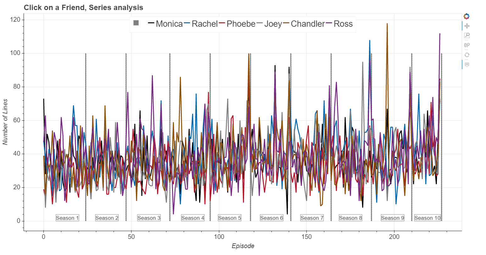

Screenplay analysis and interactive exploration of TV-show:
Click here and launch interactive exploration of the Figure shown below

From raw screenplay to usable data:
I obtained the raw 'Friends' screenplay from here. Among raw files, there were two .html files that do not represent an official TV-show episode: '07outtakes.html' and '0423uncut.html', so I removed them. In order to have data in the desired format for my analysis, I:i) Imported the .html files into python;
ii) Converted files into text and;
iii) Started with the data extraction for each main 'Friend' character.
Of course, raw data are not clean, so it was fun to find various formatting styles in order to extract all data. For example, in screenplay there is a notation of who's line it is (who is talking), and in this particular script we have most often lines that begin with: **Name:**. However, that is not always the case, sometimes there are ** extra or missing (both, or only one side), : is on the other side, there is an empty space e.g. : **, and sometimes their names are shortened to a form: MNCA, RACH, JOEY, ROSS, CHAN, PHOE. In order to extract lines that each Friend character says in the show, I collect all the different formats in the function def get_friend_line(friend_name, episode), a snippet of this code is shown below, and file that contains this function is here.
Exporting lines:
# We have a list of Friend names list_of_friends = ['**Monica:**', '**Rachel:**', '**Ross:**', '**Joey:**', '**Phoebe:**', '**Chandler:**'] # For example, if we want to search for Monica's lines we use: friend_name = '**Monica:**' # Search friend lines, b searchquery = friend_name # Get all the searchqueries, because script has a different text formatting. searchqueries = (searchquery, searchquery[2:-3]+'**:', searchquery[0:-3]+'** :', (searchquery[2:-3]+':').upper(), searchquery[2:6].upper(), (searchquery[2]+searchquery[4]+searchquery[6:8]).upper(), searchquery[2:], '**'+searchquery+'**', searchquery[2:-3]+': **')
Exporting Titles:
In a similar way to extracting lines, we extract all Titles of the TV-show episodes. The function used is def get_episode_title(episode): and it can be found here. Below is the snippet of the code to show which quetries are used and which are ignored in order to obtain the Titles:# Search for titles, most of them start with #, however, off course # There are lot of different formatings+ searchqueries = ('#', 'The One', '9', 'FRIENDS - THE ONE', '**The One', '10') skipqueries = ('###', '## credits', '## friends', '# friends')
Episodes and Counting Lines:
In script Friends_analysis.py there are several functions that I created in order to extract lines of a Friend character for each episode. I find interesting seeing how number of lines for each Friend character changes with Series. In order to do that, I find number of lines for each friend in each episode and calculate rolling mean (and sum) for each season. See function below for an example, while all functions are heredef running_mean(): """ Compute running means for a season based length of the number of lines - for each Friend. Returns ------- means - List of 6 lists containing the averages lines per season. """ means = [] counts = np.array([0, *np.cumsum(num_episodes)]) for friend in friend_lines: mean = [] for i, j in zip(counts[:-1], counts[1:]): mean.append(np.average(df_counted[friend][i:j])) means.append(mean) return(means)
Number of lines:
Here I show an average number of lines per season. Phoebe has the lowest number of lines, although her lines are increasing with time (top Figure). It is also interesting, that Chandler has large sudden drop in the number of lines in season 8. Of course, an average lines have a large scatter, as shown at the Bottom Figure.

Least lines:
Monica has only 4 lines in S06E23 'The one with the ring', and 8 lines in S08E19 'The One with Joey's Interview'.Rachel has only 10 lines in two episodes: S04E18 'The One Where Chandler Crosses the Line' and S09E15 'The One With the Mugging'.
Ross has only 4 lines in S04E03 ('The One With The Cuffs'), although in this episode he has one more line (saying 'Hey') that he says at the same time with Joey and Rachel.
Pheobe has 10 lines in 2 episodes S01E06 and S04E21 ('The One with the Butt' and 'The One With the Invitation').
Chandler has two consecutive episodes where he has only 9 and 10 lines, S07E18 and S07E19 ('The One With Joey's Award' and 'The One with Ross and Monica's Cousin').
Joey has only 8 lines in the beginning of the show, in S01E02.
Most lines:
Monica S06E15 and S06E25 ('The One That Could Have Been' and 'The One with the Proposal'), respectively with 93 and 92 lines.Rachel S08E23 'The One Where Rachel Has a Baby', a two part episode, with 108 lines.
Ross has the most lines in the last episode 'The Last One' with 112 lines.
Pheobe S05E23 has 87 lines in 'The One in Vegas' (two part episode).
Chandler has 100 lines in S05E23 and absolute maximum of 118 lines in S09E10 'The One With Christmas in Tulsa'.
Joey reaches maximum of 95 lines in S08E19 'The One with Joey's Interview', and 93 in S09E23 'The one in Barbados'.
Opening scene:
I was curious to see who is apearing the most, and having the most amount of lines in the opening scenes. Function exporting opening scene lines was fun to make, since it also involved quering phrases and looking into different formatings. After extraction of the opening scenes, we again performed extraction of Friends lines, as in the first example. Below is a function that extracts opening scenes from each episode:
def episode_intro(all_episodes_in_a_season_txt): """ Get the lines before opening credits in the show. Parameters ---------- all_episodes_in_a_season_txt - A list containing text of all episodes. Returns ------- intro_count - Alist of texts which containg lines from each episode before opening credits. """ intro_count = [] monica_pre_credits = [] opening_credits = '**Opening Credits**' for i, each_ep in enumerate(all_episodes_in_a_season_txt): # There are plenty formatings for "Opening Credits", fine all of them and replace them with the most used ones replace_each_ep = each_ep.replace('### Opening Credits', opening_credits).replace('Opening Credits**', opening_credits).replace('**OPENING TITLES**', opening_credits).replace('OPENING TITLES', opening_credits).replace('## Credits', opening_credits).replace('OPENING CREDITS', opening_credits).replace('Opening Credits', opening_credits).replace('**Opening credits.**', opening_credits).replace('Opening credits', opening_credits).replace('OPENING SEQUENCE', opening_credits).replace('[INTRO]', opening_credits) # Check if the phrase "**Opening Credits**" is in the text if '**Opening Credits**' not in replace_each_ep: print(i) # For now skip episodes which don't have opening credits # written in the text -- Rob: check if ep. has them at all if '**Opening Credits**' in replace_each_ep: get_intro = replace_each_ep.split('**Opening Credits**')[0] # Remove text within [] and () brackets. These lines are scene description. one_intro_tmp = re.sub( "\[[^\]]*\]", "", get_intro) # Removes [] intro_clear = re.sub('\([^)]*\)', "",one_intro_tmp) # Removes () intro_count.append(intro_clear + os.linesep) # Saves all outputs into separate txt file with open('./pre_credits/pre_credits_{0:03d}.txt'.format(i), 'w', encoding='utf-8') as f1: f1.write(intro_clear + os.linesep) else: continue #print(intro_count[42][0:2600]) print(len(intro_count)) return intro_count
Word clouds:
Exploring word clouds, I find that it can be roughly used to see if there is a quest character in the episode and which one it is. For creating word clouds I use python package wordcloud. When making wordclouds I exclude Friends names and 'Scene', 'Oh', 'Ok', 'Okay' words, since they do repeat quite a lot. Code that generates wordcloud is shown below, while all functions can be found here.wordcloud = WordCloud(width=width, height=height, background_color=bck_color, min_font_size=min_font_size, stopwords=stopwords, colormap = colourmap, relative_scaling=relative_scaling, collocations=collocations).generate(episode) plt.figure(figsize=(15,15)) plt.imshow(wordcloud, interpolation="bilinear") plt.axis("off")
# Define parameters for wordcloud max_font_size = 100 min_font_size = 20 bck_color = 'white' width=1600 height=800 colourmap = plt.cm.cividis_r relative_scaling = 1 # relative_scaling == 1.0 means frequency dictates font-size -> Hides low-frequency words collocations = False # if true, it will group phrases; if false it will take single words
Word clouds for the First season
.png)
.png)
.png)
.png)
.png)
.png)
.png)
.png)
.png)
.png)
.png)
.png)
.png)
.png)
.png)
.png)
.png)
.png)
.png)
.png)
.png)
.png)
.png)
.png)
Making interactive Figures with Bokeh:
I use python package Bokeh - an interactive visualization library, to make interactive Figures. A function that created the interactive Figure (shown at the top of the page) is shown below. Here I need to define the data source, ColumnDataSource, and used values - in this case Number of lines of each Friend character. I also define HoverTool because I want to show Episode and its Title when I hover over the Figure. Next, I create figure and interactive tools which I want to have, in this case "pan,wheel_zoom,box_zoom,reset". Additional options that I place are: p.line - where I define how the line will appear when its not active, or when its active (when I click on the legend item); p.vbar - defined to show season delimiter. In thi python file I have other, similar functions for interactive exploration.def make_bokeh_correlation_numline_plot(): """ Interactive plots showing counts of the Number of lines of each friend per episode throughout the entire series. The plot shows season number and the line dividing seasons. If clicked on a Friend in a character in the legend, it will highlight the data of that friend. On hover - number of episode and the name of the episode is shown. """ source = ColumnDataSource( data=dict( x=df_counted.index, monica=df_counted['NumLinesMon'], rachel=df_counted['NumLinesRac'], phoebe=df_counted['NumLinesPho'], joey=df_counted['NumLinesJoe'], chandler=df_counted['NumLinesCha'], ross=df_counted['NumLinesRos'], episode = df_only_sorry['Titles'], ) ) hover = HoverTool( tooltips=[ ("Episode", "$index"), ("Title", "@episode") ] ) p = figure(plot_width=1500, plot_height=800, tools=[hover, "pan,wheel_zoom,box_zoom,reset"]) p.title.text = 'Click on a Friend, Series analysis' x_corr = 'x' p.vbar(season_delim, top=num_delim_lines, width=0.2, color='purple', legend='') p.line(x_corr,'monica', source=source, line_width=4, color='lightgrey', alpha=0.4, muted_color='#8c510a', muted_alpha=1, legend='Monica') p.line(x_corr, 'rachel', source=source, line_width=4, color='lightgrey', alpha=0.4, muted_color='#01665e', muted_alpha=1, legend='Rachel') p.line(x_corr, 'phoebe', source=source, line_width=4, color='lightgrey', alpha=0.4, muted_color='#c51b7d', muted_alpha=1, legend='Phoebe') p.line(x_corr, 'joey', source=source, line_width=4, color='lightgrey', alpha=0.4, muted_color='#4d4d4d', muted_alpha=1, legend='Joey') p.line(x_corr, 'chandler', source=source, line_width=4, color='lightgrey', alpha=0.4, muted_color='#762a83', muted_alpha=1, legend='Chandler') p.line(x_corr, 'ross', source=source, line_width=4, color='lightgrey', alpha=0.4, muted_color='#b2182b', muted_alpha=1, legend='Ross') x_positions = [7, 29.5, 53.5, 78.5, 99.5, 123.5, 146.5, 168.5, 192.5, 211.5] season_num = [1, 2, 3, 4, 5, 6, 7, 8, 9, 10] for i, each_label in enumerate(x_positions): mytext = Label(x=each_label, y=0, text='Season {0}'.format(season_num[i]), border_line_color='black', border_line_alpha=0.5,text_font_size="13pt") p.add_layout(mytext) p.legend.orientation = "horizontal" p.legend.location = "top_center" p.legend.click_policy="mute" # Define axis labels and properties p.xaxis.axis_label = 'Episode' p.yaxis.axis_label = 'Number of Lines' p.xaxis.axis_label_text_font_size = "15pt" p.yaxis.axis_label_text_font_size = "15pt" p.title.text_font_size = '18pt' p.xaxis.major_label_text_font_size = "15pt" p.yaxis.major_label_text_font_size = "15pt" p.legend.label_text_font_size = '20pt' show(p)
Click here and launch interactive exploration of the Figure shown at the top of the page.